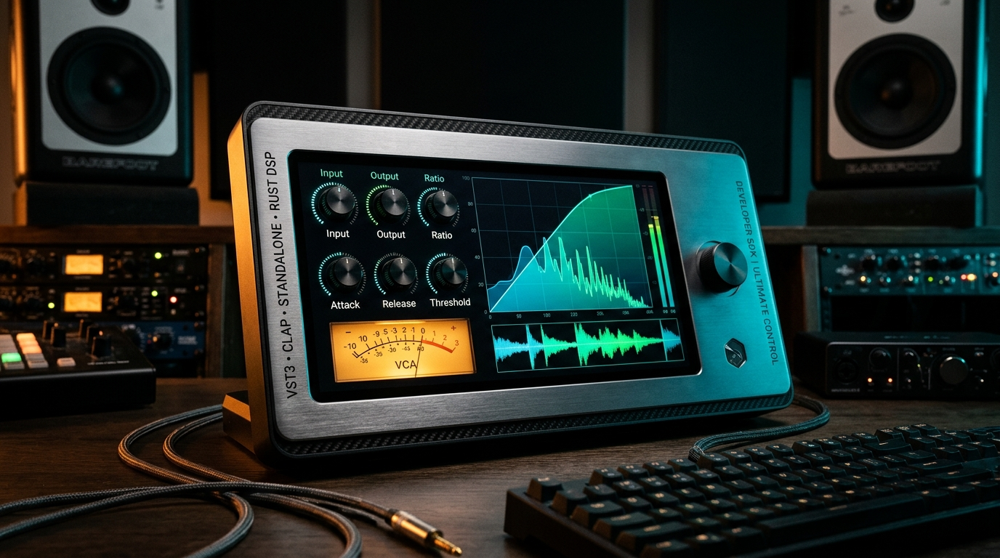

Build Hardware-Grade VST3 & CLAP Plugins with Rust & WebView
A production-proven, real-time safe audio plugin SDK combining Rust (nih-plug),
Serverless WebView2/WebKit (wry), and 6-Skin @audio-ui interfaces.
Engineered for both seasoned DSP developers and AI Vibe Coders.
Interactive 6-Skin Hardware Preview (`studio_bus_comp`)
Every plugin created with this template ships with 6 switchable hardware aesthetics out of the box (`minimal`, `dark`, `retro`, `synth70`, `gunmetal`, `phosphor`) verified by automated contract tests.
AI Agent & Vibe-Coder First-Class Support (`llms.txt`)
Want to build a custom Saturator, Mastering EQ, Chorus, or Synthesizer using Claude Code, Cursor, Antigravity, or Windsurf? We provide machine-readable context files (`llms.txt`, `llms-full.txt`, `CLAUDE.md`, `.cursorrules`) and mathematical contract gates so AI agents never produce dummy knobs or audio-thread glitches.
1. Analog Tube Saturator Prompt
Scaffolds a stereo asymmetric tube saturator with tape high-cut, bass warmth shelf, and 6 skins.
Read llms.txt and llms-full.txt. Run `cargo run --package xtask -- new-plugin --name "Velvet Warmth" --vendor "VibeAudio" --id "com.vibeaudio.velvetwarmth"` and implement a stereo tube & tape saturator using `SoftClipper::process_asymmetric_tube` and `BiquadFilter`. Verify all 4 gates with `scripts/audit_plugin_architecture.ps1`.
2. 4-Band Mastering EQ Prompt
Builds a 4-Band Stereo Parametric Mastering Equalizer with live SVG frequency response curve.
Read llms.txt and llms-full.txt. Run `cargo run --package xtask -- new-plugin --name "Prism Mastering EQ" --vendor "VibeAudio" --id "com.vibeaudio.prismeq"` and chain 4 stereo pairs of `dsp_core::BiquadFilter` (HighPass, LowShelf, Peaking, HighShelf) with a 6-skin interactive SVG EQ curve. Prove all parameters in `declare_plugin_contract!`.
3. Stereo BBD Chorus Prompt
Creates a bucket-brigade stereo chorus using stack-allocated Hermite `DelayLine` interpolation.
Read llms.txt and llms-full.txt. Run `cargo run --package xtask -- new-plugin --name "Dimension BBD" --vendor "VibeAudio" --id "com.vibeaudio.dimensionbbd"` using two `dsp_core::DelayLine<8192>` buffers modulated in quadrature stereo phase, with a 6-skin Lissajous vectorscope UI.
4-Layer Shared SDK Architecture & 4-Gate Certification
All plugins share a battle-tested core (`dsp_core`, `base_plugin_core`, `base_plugin_webview`) while keeping 100% of their custom DSP and UI inside `crates/<your_plugin>`.
Layer 1: `crates/dsp_core`
Real-time safe, zero-allocation building blocks: `BiquadFilter`, `OnePoleSmoother`, `EnvelopeFollower`, `SoftClipper`, and stack-allocated `DelayLine<N>` with 4-point Hermite interpolation.
Layer 2: `crates/base_plugin_core`
Defines `DspEngine`, lock-free `TelemetryRing` (atomic L/R Peak, RMS & Gain Reduction), `PresetBank`, and the `declare_plugin_contract!` test generator macro.
Layer 3: `crates/base_plugin_webview`
Serverless `wry` WebView2/WebKit host with Win32 `HWND_MESSAGE` timer pump (`SetTimer` + `PeekMessageW`) and per-executable User Data Folder isolation.
Quickstart & Upstream SDK Auto-Sync
Create a new plugin in 60 seconds and pull future SDK improvements anytime with zero merge conflicts.
git clone https://github.com/davidcastilloc/rust-webview-vst-template.git my-audio-plugin cd my-audio-plugin # 1. Scaffold your new plugin crate (VST3 + CLAP + Standalone) cargo run --package xtask -- new-plugin --name "Lush Chorus" --vendor "MyStudio" --id "com.mystudio.lushchorus" # 2. Run the 4-Gate Architecture & Contract Certification powershell -ExecutionPolicy Bypass -File scripts/audit_plugin_architecture.ps1 # 3. Build Standalone .exe and VST3 / CLAP bundles cargo build --release -p lush_chorus --bin lush_chorus_app cargo run --package xtask -- bundle lush_chorus --release